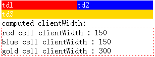

HE1001: IE 中单元格的 colspan 属性在某些情况下会影响 TABLE 元素的自动布局
作者：武利剑
标准参考
关于表格元素的自动布局
在 W3C CSS2.1 文档中，TABLE 元素在自动布局时的列的宽度计算规则是这样的：
- 1. 计算每一个单元格的最小宽度 (MCW)：经过格式化的内容可能会扩展到很多行，但是不会溢出单元格。如果某列的宽度设置值 (W) 大于 MCW，那么 W 就是单元格的最小宽度。另外，计算每个单元格的“最大”单元格宽度：不换行的将内容格式化，除非有显式的换行。
- 2. 对每一列，根据只占该列的单元格的宽度确定最大最小宽度。最小值是其 MCW 最大的那个单元格的宽度（或列的 'width'，取较大的）。最大值是取最大单元格宽度最大的单元格宽度（或列的 'width'，取较大的）。
- 3. 对于跨越多列的单元格，增加这些列的最小宽度，使它们的和至少跟单元格等宽。对于最大宽度也照样处理。如果可能的话，每个扩展到的列增加的宽度应大致相同。
- 4. 对于每一个宽度值不是 auto 的列组，增加它所跨列的最小宽度，使宽度和至少跟列组的宽度等宽。
其中在第三步，提到了当表格中出现跨越多列的单元格时，它所跨列宽的计算规则：相应的增加所跨列的最小宽度。
虽然如此，但是对增加的方式没有明确说明，只是说，如果可能，所跨列增加的宽度应大致相同。
因此，对于跨列后的列宽计算方式，在各浏览器也就产生了差异。
关于 表格元素的自动布局 的详细信息，请参考 W3C CSS2.1 规范 17.5.2.2 Automatic table layout 中的内容。
问题描述
单元格的 colspan 属性在 IE 中可能影响 TABLE 元素的自动布局。
造成的影响
此问题严重时可能会导致页面布局混乱。
受影响的浏览器
| IE6 IE7 IE8 |
|---|
问题分析
请看以下测试用例。
分析以下代码：
<script type="text/javascript">
window.onload = function() {
function $(id) {
return document.getElementById(id);
}
$("info").innerHTML = "red cell clientWidth : " + $("td1").clientWidth +
"<br/>blue cell clientWidth : " + $("td2").clientWidth +
"<br/>gold cell clientWidth : " + $("td3").clientWidth;
}
</script>
<table id="T" style="color:white;" cellpadding="0" cellspacing="0">
<tr>
<td id="td1" style="background-color:red;">td1</td>
<td id="td2" style="background-color:blue; width:100px;">td2</td>
</tr>
<tr>
<td id="td3" style=" background-color:gold; width:300px;" colspan="2">td3</td>
</tr>
</table>
computed clientWidth:
<div id="info" style="border:1px dashed red; width:300px;"></div>
- T 是一个自动布局的表格，含两行，两列。T 中『cellpadding="0" cellspacing="0"』的设置是为了去除单元格之间 padding 等的影响。
- td2 的宽度是100px，大于其内容宽度；
- td3 的宽度是300px，大于其内容宽度。
根据 CSS2.1 规范中的描述可知，td1 的最终宽度应为 200px。
这段代码在不同的浏览器环境中的表现：
| IE | Firefox Opera Safari Chrome |
|---|---|
 |
 |
可见，在 IE 中，单元格的 td1 和 td2 宽度被重新分配。
将 td2 的宽度设置 (width:100px;) 去掉后：
| IE Firefox Opera Safari Chrome |
|---|
|  |
解决方案
1. 设置 TABLE 的 'table-layout' 特性值为 fixed，使用固定布局的表格元素可避免此问题。
2. 单元格所跨过的列的宽度都设置成 auto。
参见
知识库
相关问题
测试环境
| 操作系统版本: | Windows 7 Ultimate build 7600 |
|---|---|
| 浏览器版本: |
IE6 IE7 IE8 Firefox 3.6.8 Chrome 6.0.472.14 dev Safari 5.0.1 Opera 10.60 |
| 测试页面: | cell_width_colspan.html cell_width_colspan_2.html |
| 本文更新时间: | 2010-08-05 |
关键字
cell width colspan table